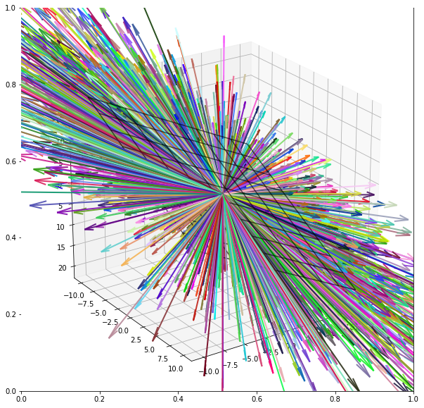
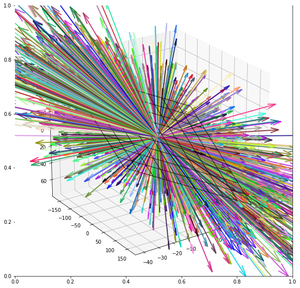
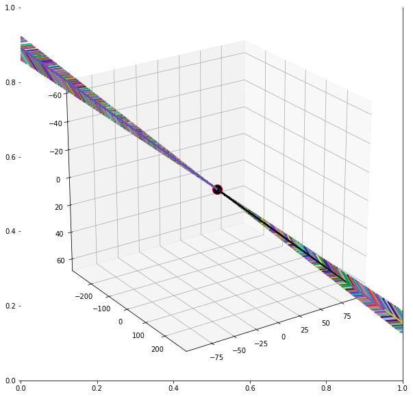
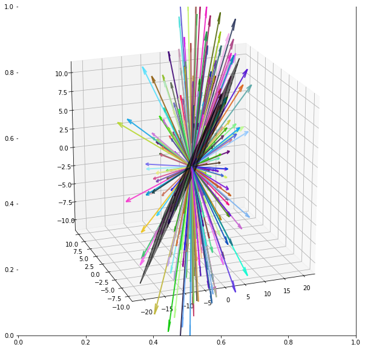

Vector Span
- Span
- Algebraic Definition (Span)
- Geometrical Definition (Span)
- Spanned By
- Span Membership (Examples)
- Theorem (Span is a subspace)
- Theorem (Span is a subspace and is the smallest subspace of V)
- Theorem (Linear Dependence Span equals each other)
- Examples
Span
Algebraic Definition (Span)
Algebraic Definition (Span)
Let \(S \subseteq V\) be a non-empty subset of the vector space \(V\). To be more explicit, define \(S = \{\v_1, \v_2, ..., \v_m\}\) to be a subset in \(V\), then the linear combination of all the vectors \(\v_1, \v_2, ..., \v_m\) is called the span of \(\v_1, \v_2, ..., \v_m\), which we denote as follows:
Geometrical Definition (Span)
Span is a really similar concept as subspace, and they are easy to confuse. A subspace is the region of ambient space that can be reached by any linear combination of a set of vectors. And then those vectors span that subspace. You can think about the difference using grammar: a subspace is a noun and span is a verb. A set of vectors spans, and the result of their spanning is a subspace. For example, the subspace defined as all of \(\R^2\) can be created by the span of the vectors \([0, 1]\) and \([1, 0]\). Another good example is the vector \([0,1]\) spans a 1D subspace that is embedded inside \(\R^2\) (not \(\R^1\) since the vector has 2 elements). Then the vector \([1, 2]\) also spans 1D subspace but it is a difference 1D subspace from that spanned by \([0,1]\). - Mike X Cohen: Linear Algebra: Theory, Intuition, Code, 2021. (pp. 86)
Spanned By
If \(W\) is a vector subspace of \(V\) and \(W = \text{Span}(S)\), we say that \(S\) is a spanning set (or generating set) of \(W\) and \(W\) is spanned or generated by \(S\).
Important
The intuition is that if a vector space \(W\) is spanned by a set of vectors \(S\), then this means for every vector \(\w_i \in W\), there exists scalars \(\lambda_i \in \F\), such that \(\w_i = \lambda_1 \w_1 + \lambda_2 \w_2 + \cdots + \lambda_m \w_m\). In laymen terms, this set of vectors \(S\) can build up every single element in \(W\).
Span Membership (Examples)
Example
The author mentioned a commonly used terms in linear algebra, which is to check if one vector \(\v\) is "in the span" of a set of vectors. This is illustrated clearly with the example provided below:
and the set
Then the question is whether \(\v\) and \(\w\) are in the span of \(S\). In simple words, can the linear combination of the vectors \(\begin{bmatrix} \color{red}2 \\ \color{red}4 \\ \color{red}{0} \end{bmatrix}\) and \(\begin{bmatrix} \color{red}4 \\ \color{red}{-1}\\ \color{red}{0} \end{bmatrix}\) form \(\v\) or \(\w\)? Well the answer for \(\v\) is easy (purposely made easy), we just add them up and get \(\v\), and in this case, we say \(\v\) is in the \(\text{span}(S)\). But for \(\w\), we can quickly conclude that \(\w \not \in \text{span}(S)\) because the third component of the span of \(S\) is still \(0\), and thus no linear combination can ever form to \(\w\)'s third component, \(-5\).
Theorem (Span is a subspace)
Theorem (Span is a subspace)
Let \(V\) be a vector space over a field \(\F\). Let \(S \subseteq V\) be a subset of \(V\). Then Span\((S)\) of \(V\) is a vector subspace of \(V\).
An immediate consequence of this definition is that span(S) must be a subspace of V. Why? Recall that to be a subspace, closure under vector addition and vector-scalar multiplication must be satisfied; this follows because the definition of span(S) is the linear combination of all vectors in S, and hence any vector addition or vector-scalar multiplication is a member of the linear combination.
Note
We will prove this together in the next theorem.
Theorem (Span is a subspace and is the smallest subspace of V)
Theorem (Span is a subspace and is the smallest subspace of V)
Let \(V\) be a vector space over a field \(\F\). Let \(S \subseteq V\) be a subset of \(V\). Then \(\text{span}(S)\) of \(V\) is a vector subspace of \(V\). In particular, \(\text{span}(S)\) is the smallest vector subspace of \(V\) containing the set \(S\) (or containing all the vectors in \(S\)).
Example (Different Sets can span the same Vector Space)
Different Sets can span the same Vector Space
Before we go through the proof, it is important to understand some possible confusions. One might be confused over the notion of smallest. We can motivate it with an example:
spans the whole \(\R^2\) space, although we have yet to learn any algorithmic way of checking whether a set spans a particular vector space, this is an obvious enough example (hopefully one can see that the linear combination of these two vectors can reach the whole ambient space \(\R^2\)). This is because the linear combination of vectors in \(S\) can form any vectors in the 2 dimensional space. Then consider
which also spans the whole \(\R^2\) space as well. Both \(S\) and \(S_1\) are subsets of \(\R^2\) and are subspaces themselves (by inspection). However, the cardinality or the len of \(S\) is 2 and \(S_1\) is 3. Since both sets span the \(\R^2\) space, why do we say that the span is the smallest subspace of \(V\) when \(S_1\) has more "elements"? The confusion is that the theorem states that the span of a set of vectors in \(V\) is the smallest subspace of \(V\) which contains this set of vectors, not span of ANY set of vectors in \(V\) is the smallest subspace of \(V\). Therefore, \(S\) is the smallest subspace of \(V\) which contains the two vectors \(\left\{\begin{bmatrix}
\color{red}1 \\ \color{red}0
\end{bmatrix}, \begin{bmatrix}
\color{red}0 \\ \color{red}{1}
\end{bmatrix} \right\}\)
and \(S_1\) is the smallest subspace of \(V\) which contains the three vectors \(\left\{\begin{bmatrix}
\color{red}1 \\ \color{red}0
\end{bmatrix}, \begin{bmatrix}
\color{red}0 \\ \color{red}{1}
\end{bmatrix},
\begin{bmatrix}
\color{red}1 \\ \color{red}{1}
\end{bmatrix} \right\}\).
An extract from StackExchange:
Written in words that theorem states, that any subspace \(W\), that exists and contains \(v_1,…,v_n\), also contains \(\text{span}(v_1,…,v_k)\). Hence \(W\) is larger (or equal) to \(\text{span}(v_1,…,v_k)\), since it contains \(\text{span}(v_1,…,v_k)\) and could contain some more elements.
And since any other subspace \(W\) is larger (or equal) it follows that \(\text{span}(v_1,…,v_k)\) the smallest subspace. That is like saying: Any number in \(ℕ∪\{0\}\) is larger (or equal) to \(0\), hence \(0\) is the smallest number in \(ℕ∪\{0\}\). Or even closer to the original problem: Any subset \(M⊂(ℕ∪\{0\})\) with \(0∈M\) is larger or equal to \(\{0\}\), hence \(\{0\}\) has to be the smallest subset of \(ℕ∪\{0\}\) that contains \(0\).
Proof
Proof
We first show that \(\text{span}(S)\) is a vector subspace of \(V\). And then we show that if \(\text{span}(S)\) is a vector subspace of \(V\) containing \(S\), then if \(T\) is another vector subspace of \(V\) containing \(S\), we must have \(\text{span}(S) \subseteq T\).
\(\text{span}(S)\) is a subspace: It suffices to check for the conditions S2 and S3 of subspaces. To show S2, we need to show that for any \(\v, \w \in \text{span}(S)\), \(\v + \w \in \text{span}(S)\). We also note that for both \(\v\) and \(\w\), they can be expressed as linear combination of the set of vectors in \(S\), (i.e. \(\v = a_1 \v_1 + a_2 \v2 + ... + a_m \v_m\), \(\w = \b_1 \v_1 + \b_2 \v_2 + ... + \b_m \v_m\) for some \(a_i, b_i \in \F\)) Then adding them up we yield:
Equation (\ref{eq2}) shows us that it is still a linear combination of the set of vectors in \(S\), and hence also in \(\text{span}(S)\), which is closed under addition.
For S3, the same logic applies (can you show it?).
\(\text{span}(S)\) is the smallest subspace that contains \(S\): Let \(T\) be any subspace of \(V\) that contains the set \(S\). In order to show \(\text{span}(S) \subseteq T\), we will use a proving method by showing that for all elements \(\v \in \text{span}(S)\), \(\v\) is in \(T\) as well. We start off by picking any element \(\v \in \text{span}(S)\), (note that \(\v\) may not be in \(S\), but it definitely must be in \(\text{span}(S)\)! Do not get confused here!), for this \(\v\), it can be expressed as the linear combination of the vectors of \(S\), \(\v =\lambda_1\v_1 + \lambda_2\v_2 + ... + \lambda_m\v_m\), then \(\v \in T\) as well since \(T\) contains the set \(S\), and also is a subspace, thus closed under scalar multiplication and vector addition.
Theorem (Linear Dependence Span equals each other)
Theorem (Linear Dependence Span equals each other)
Let \(\u_1,...,\u_k\) be vectors in \(\mathbb{R}^n\). If \(\u_k\) is a linear combination of \(\mathbf{u_1,...,u_{k-1}}\), then
This should be an obvious fact by using the same example in the Theorem (Span is a subspace and is the smallest subspace of \(V\)).
Examples
(Geometrical Interpretation of Span)
Geometrical Interpretation of Span
The \(xz\)-plane in \(\R^3\) can be parameterized by the equations
As a subspace, the \(xz\)-plane is spanned by the vectors (1, 0, 0) and (0, 0, 1). Every vector in the \(xz\)-plane can be written as a linear combination of these two:
Geometrically, this corresponds to the fact that every point on the \(xz\)-plane can be reached from the origin by first moving some distance in the direction of (1, 0, 0) and then moving some distance in the direction of (0, 0, 1).
Python (Two Linearly Independent Vectors in \(\mathbb R^3\) Spans a Plane)
The below three examples are referenced from Macro Analyst's notes here1.
The example below assumes the ambient space \(\R^3\) and assumes that the term 2 linearly independent vectors just simply mean that these two vectors are not multiple of each other.
We know that in earlier chapter that two linearly indepedent vectors in \(\R^3\) space forms a subspace that is a plane. In fact, we can also say that two linearly independent vectors span a plane in \(\R^3\).
We can verify below visually using python, with courtesy of MacroAnalyst's Linear Algebra with Python.
Firstly, let's say we have two vectors: \((3, 9, 2)\), \((1,7,5)\) which are linearly independent. The author made use of matrix multiplication in his code to demonstrate span.
For more general span, a basic fact of matrix multiplication can assist us in demonstrating:
where \(A\) is the spanning set of vectors, \(b_k\) is vector of weights for linear combination. We can generate a random matrix \(B\) to form various linear combinations to visually verify if they are all contained in the spanned plane.
We define $$ A=\left[\begin{array}{rr} 3 & 1 \ 9 & 7 \ 2 & 5 \end{array}\right]\qquad b_i\sim N(\mathbb{0}, 1) $$
In other words, the columns of \(\A\) are the set of vectors
and we want to generate say, 300 random linear combinations of this set of vectors and show visually that all these linear combinations are IN THE PLANE SPANNED BY THE SET OF VECTORS. Technically, there are infinite number of linear combinations, but we just show 300 for good illustration. Note that these 300 random linear combination are stored in the matrix \(\B\).
import numpy as np
import matplotlib.pyplot as plt
from typing import List, Union, Tuple
# The plane spanned by {[1,0,1], [0,1,1]}
A = np.array([[1,0,1], [0, 1, 1]]).T
B = 10 * np.random.randn(2, 3000) # i = 300, i.e. 300 random weight vectors
vecs = A @ B
s = np.linspace(-10, 10, 10)
t = np.linspace(-10, 10, 10)
S, T = np.meshgrid(s, t)
X = S
Y = T
Z = S+T
fig, ax = plt.subplots(figsize=(10, 10))
ax = fig.add_subplot(projection="3d")
ax.plot_wireframe(X, Y, Z, linewidth=1.5, color="k", alpha=0.6)
ax.scatter(0, 0, 0, s=200, ec="red", fc="black")
colors = np.random.rand(vecs.shape[1], 3)
for i in range(vecs.shape[1]):
vec = np.array([[0, 0, 0, vecs[0, i], vecs[1, i], vecs[2, i]]])
X, Y, Z, U, V, W = zip(*vec)
ax.quiver(
X,
Y,
Z,
U,
V,
W,
length=1,
color=colors[i],
normalize=False,
arrow_length_ratio=0.07,
pivot="tail",
linestyles="solid",
linewidths=2,
alpha=0.9,
)
ax.view_init(elev=-156, azim=-56)
fig.savefig("span_plane.svg", format="svg", dpi=600)
plt.show()

import numpy as np
import matplotlib.pyplot as plt
from typing import List, Union, Tuple
# The plane spanned by {[3,9,2], [1,7,5]}
A = np.array([[3, 9, 2], [1, 7, 5]]).T
B = 10 * np.random.randn(2, 3000) # i = 300, i.e. 300 random weight vectors
vecs = A @ B
s = np.linspace(-10, 10, 10)
t = np.linspace(-10, 10, 10)
S, T = np.meshgrid(s, t)
X = 3 * S + T
Y = 9 * S + 7 * T
Z = 2 * S + 5 * T
fig, ax = plt.subplots(figsize=(10, 10))
ax = fig.add_subplot(projection="3d")
ax.plot_wireframe(X, Y, Z, linewidth=1.5, color="k", alpha=0.6)
ax.scatter(0, 0, 0, s=200, ec="red", fc="black")
colors = np.random.rand(vecs.shape[1], 3)
for i in range(vecs.shape[1]):
vec = np.array([[0, 0, 0, vecs[0, i], vecs[1, i], vecs[2, i]]])
X, Y, Z, U, V, W = zip(*vec)
ax.quiver(
X,
Y,
Z,
U,
V,
W,
length=1,
color=colors[i],
normalize=False,
arrow_length_ratio=0.07,
pivot="tail",
linestyles="solid",
linewidths=2,
alpha=0.9,
)
ax.view_init(elev=-156, azim=-56)
plt.show()

Python (Two Linearly Dependent Vectors in \(\mathbb R^3\) Spans a Line)
What if the two vectors are not linear independent? Then the following example will convince you that two linearly dependent vectors span a line in \(\R^3\) space. Note that this is equivalent to "one vector" in \(\R^3\) spans a line.
# Although spanned by 2 vectors, but actually reduces to 1 vector.
# So it is a line.
A = np.array([[3, 9, 2], [6, 18, 4]]).T
B = 10 * np.random.randn(2, 3000) # i = 300, i.e. 300 random weight vectors
vecs = A @ B
s = np.linspace(-10, 10, 10)
t = np.linspace(-10, 10, 10)
S, T = np.meshgrid(s, t)
X = 3 * S + 6 * T
Y = 9 * S + 18 * T
Z = 2 * S + 4 * T
fig, ax = plt.subplots(figsize=(10, 10))
ax = fig.add_subplot(projection="3d")
ax.plot_wireframe(X, Y, Z, linewidth=1.5, color="k", alpha=0.6)
ax.scatter(0, 0, 0, s=200, ec="red", fc="black")
colors = np.random.rand(vecs.shape[1], 3)
for i in range(vecs.shape[1]):
vec = np.array([[0, 0, 0, vecs[0, i], vecs[1, i], vecs[2, i]]])
X, Y, Z, U, V, W = zip(*vec)
ax.quiver(
X,
Y,
Z,
U,
V,
W,
length=1,
color=colors[i],
normalize=False,
arrow_length_ratio=0.07,
pivot="tail",
linestyles="solid",
linewidths=2,
alpha=0.9,
)
ax.view_init(elev=-156, azim=-56)
fig.savefig("span_line.svg", format="svg", dpi=600)
plt.show()

Python (Three Linearly Inependent Vectors in \(\mathbb R^3\) Spans the whole Ambient Space)
Reproduce the code above, but we have three vectors: \((1,0,1)\), \((1,1,0)\), \((0,1,1)\). Again we create a random coefficent matrix to form different linear combinations.
A = np.array([[1, 0, 1], [1, 1, 0], [0, 1, 1]]).T
B = 5 * np.random.randn(3, 300)
vecs = A @ B
s = np.linspace(-10, 10, 10)
t = np.linspace(-10, 10, 10)
S, T = np.meshgrid(s, t)
X = S + T
Y = T
Z = S
fig, ax = plt.subplots(figsize=(10, 10))
ax = fig.add_subplot(projection="3d")
ax.plot_wireframe(X, Y, Z, linewidth=1.5, color="k", alpha=0.6)
ax.scatter(0, 0, 0, s=200, ec="red", fc="black")
colors = np.random.rand(vecs.shape[1], 3)
for i in range(vecs.shape[1]):
vec = np.array([[0, 0, 0, vecs[0, i], vecs[1, i], vecs[2, i]]])
X, Y, Z, U, V, W = zip(*vec)
ax.quiver(
X,
Y,
Z,
U,
V,
W,
length=1,
color=colors[i],
normalize=False,
arrow_length_ratio=0.07,
pivot="tail",
linestyles="solid",
linewidths=2,
alpha=0.9,
)
ax.view_init(elev=21, azim=-110)
fig.savefig("span_ambient_space.svg", format="svg", dpi=600)
plt.show()
